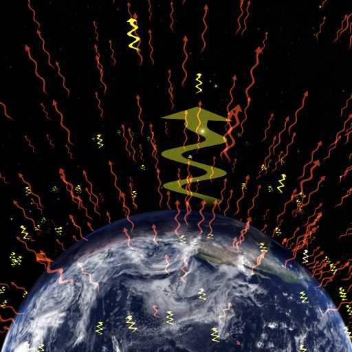

Earth Energy Budget

This module is a diagram of the Earth's energy budget. Shortwave radiation comes in from the Sun,
some of which is reflected back into space. The absorbed shortwave radiation warms the Earth which in turn radiates infrared
(longwave)radiation back into space. When more energy is absorbed than is radiated out the temperature of the Earth rises.
This module can be used in conjunction with showing the 'reflected shortwave' and 'outgoing longwave' WMS layers.
Parameters
There are several variables to control the appearance and behaviour of this dataset.
- EarthEnergyBudgetShortColor: controls the color of the shortwave radiation
- EarthEnergyBudgetLongColor: controls the color of the longwave radiation
- EarthEnergyBudgetAlbedo: controls the fraction of reflected shortwave radiation
- EarthEnergyBudgetRadius: controls the width of the radiation arrows
- EarthEnergyBudgetAnimationPeriod: controls how fast the animation plays
- EarthEnergyBudgetRadius: controls the width of the radiation arrows
- EarthEnergyBudgetOvershoot: controls how large the incoming cylinder of radiation is (e.g. a value of .1 means that the cylinder has a radius 10 percent larger than the Earth.)
- EarthEnergyBudgetRadStart: controls where the radiation first appears (in EARTHRADIUS units)
- EarthEnergyBudgetRadEnd: controls how far the radiation goes (in EARTHRADIUS units)
- EarthEnergyBudgetShortLength: controls the length of the shortwave radiation arrows (in EARTHRADIUS units)
- EarthEnergyBudgetLongLength: controls the length of the longwave radiation arrows (in EARTHRADIUS units)
The module will appear as "Earth Energy Budget" in the object tree, under Planets/Earth.
Version
1.0
Created
20 April, 2016
Created By
Mark SubbaRao
Adler Planetarium
CC-by